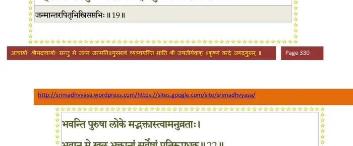
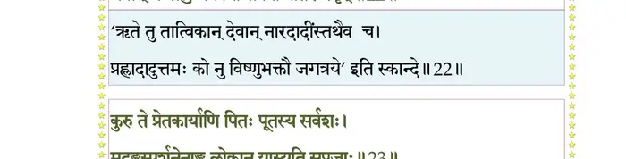
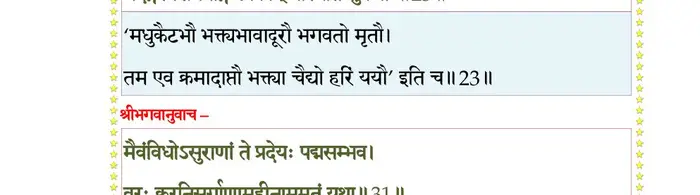
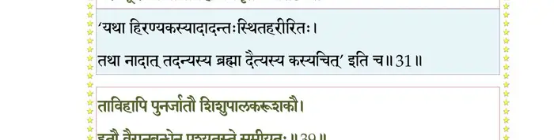
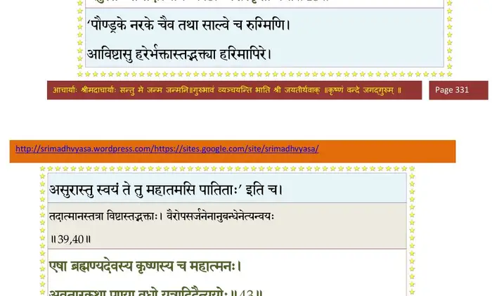
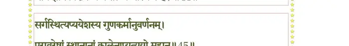
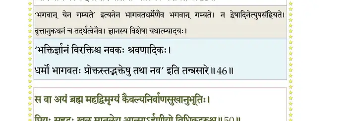
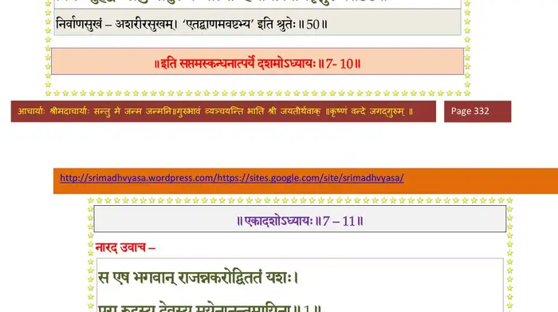

स्कन्ध 7 · अध्याय 10
श्लोक १
नारद उवाच–
भक्तियोगस्य तत् सर्वमन्तरायतयाऽर्भकः ।
मन्यमानो हृषीकेशं स्मयमान उवाच ह।। १ ।।
भक्तियोगस्य तत् सर्वमन्तरायतयाऽर्भकः ।
मन्यमानो हृषीकेशं स्मयमान उवाच ह।। १ ।।
श्लोक २
प्रह्लाद उवाच–
मा मा प्रलोभयोत्पत्त्याऽसक्तं कामेषु तैर्वरैः ।
तत्सङ्गभीतो निर्विण्णो मुमुक्षुस्त्वामुपाश्रितः।। २ ।।
मा मा प्रलोभयोत्पत्त्याऽसक्तं कामेषु तैर्वरैः ।
तत्सङ्गभीतो निर्विण्णो मुमुक्षुस्त्वामुपाश्रितः।। २ ।।
श्लोक ३
भृत्यलक्षणजिज्ञासुर्भक्तं कामेषु चोदयात् ।
भवान् संसारबीजेषु हृदयग्रन्थिषु प्रभो ।। ३ ।।
भवान् संसारबीजेषु हृदयग्रन्थिषु प्रभो ।। ३ ।।
श्लोक ४
नान्यथा तेऽखिलगुरोर्घटते करुणात्मनः ।
नष्टदृष्टेस्तमस्यन्धे त्वं पारः पारदर्शिनः ।। ४ ।।
नष्टदृष्टेस्तमस्यन्धे त्वं पारः पारदर्शिनः ।। ४ ।।
श्लोक ५
यस्त आशिष आशास्ते न स भृत्यः स वै वणिक् ।
स वै स्वामी स वै भृत्यो गुणलुब्धौ न कामुकौ ।। ५ ।।
स वै स्वामी स वै भृत्यो गुणलुब्धौ न कामुकौ ।। ५ ।।
श्लोक ६
आशासानो न वै भृत्यः स्वामिन्याशिष आत्मनः ।
न स्वामी भृत्यतः स्वाम्यमिच्छन् यो राति चाशिषः।। ६ ।।
न स्वामी भृत्यतः स्वाम्यमिच्छन् यो राति चाशिषः।। ६ ।।
श्लोक ७
अहं त्वकामस्त्वद्भक्तस्त्वं च स्वाम्यनपाश्रयः ।
नान्यथेहावयोरर्थो राजसेवकयोरिव ।। ७ ।।
नान्यथेहावयोरर्थो राजसेवकयोरिव ।। ७ ।।
श्लोक ८
यदि रासीश मे कामान् वरान् त्वं वरदर्षभ ।
कामानां हृद्यसंरोहं भवतस्तु वृणे वरम् ।। ८ ।।
कामानां हृद्यसंरोहं भवतस्तु वृणे वरम् ।। ८ ।।
श्लोक ९
इन्द्रियाणि मनः प्राणा आत्मा धर्मो धृतिर्मतिः ।
ह्रीः श्रीस्तेजः स्मृतिः सत्यं येषां नश्यन्ति जन्मना।। ९ ।।
ह्रीः श्रीस्तेजः स्मृतिः सत्यं येषां नश्यन्ति जन्मना।। ९ ।।
श्लोक १०
विमुञ्चति यदा कामान् मानवो मनसि श्रितान् ।
तर्ह्येव पुण्डरीकाक्ष न भवायावकल्पते
नारदेनोपदिष्टं मे तव मन्त्रमिमं स्मरे ।। १० ।।
तर्ह्येव पुण्डरीकाक्ष न भवायावकल्पते
नारदेनोपदिष्टं मे तव मन्त्रमिमं स्मरे ।। १० ।।
श्लोक ११
ओं नमो भगवते तुभ्यं पुरुषाय महात्मने ।
हरयेऽद्भुतसिंहाय ब्रह्मणे परमात्मने ।। ११ ।।
हरयेऽद्भुतसिंहाय ब्रह्मणे परमात्मने ।। ११ ।।
श्लोक १२
श्रीनृसिंह उवाच–
नैकान्तिनो मे मयि जात्विहाशिष आशासतेऽमुत्र तथा भवादृशाः ।
तथाऽपि मन्वन्तरमेतदत्र दैत्येश्वराणामनुभुङ्क्ष्व भोगान् ।। १२ ।।
नैकान्तिनो मे मयि जात्विहाशिष आशासतेऽमुत्र तथा भवादृशाः ।
तथाऽपि मन्वन्तरमेतदत्र दैत्येश्वराणामनुभुङ्क्ष्व भोगान् ।। १२ ।।
श्लोक १३
कथा मदीया जुषमाणः प्रियास्त्वमावेश्य मामात्मनि सन्तमेकम् ।
सर्वेषु भूतेष्वधियज्ञमीशं यजस्व योगेन च कर्म हिन्वन् ।। १३ ।।
सर्वेषु भूतेष्वधियज्ञमीशं यजस्व योगेन च कर्म हिन्वन् ।। १३ ।।
श्लोक १४
भोगेन पुण्यं कुशलेन पापं कलेवरं कालजवेन हित्वा ।
कीर्तिं विशुद्धां सुरलोकगीतां विताय मामेष्यसि मुक्तबन्धः।। १४ ।।
कीर्तिं विशुद्धां सुरलोकगीतां विताय मामेष्यसि मुक्तबन्धः।। १४ ।।
श्लोक १५
य एतत् कीर्तयेन्मह्यं त्वया गीतमिदं नरः ।
त्वां च मां च स्मरन् काले कर्मबन्धाद् विमुच्यते।। १५ ।।
त्वां च मां च स्मरन् काले कर्मबन्धाद् विमुच्यते।। १५ ।।
श्लोक १६
प्रह्लाद उवाच–
वरं वरय एतत् ते वरदेशान्महेश्वर ।
यदनिन्दत् पिता मे त्वामविद्वांस्तेज ऐश्वरम्।। १६ ।।
वरं वरय एतत् ते वरदेशान्महेश्वर ।
यदनिन्दत् पिता मे त्वामविद्वांस्तेज ऐश्वरम्।। १६ ।।
श्लोक १७
बद्धामर्षाशयः साक्षात् सर्वलोकगुरुं प्रभुम् ।
भ्रातृहेति मृषादृष्टिस्त्वद्भक्ते मयि चाघवान्।। १७ ।।
भ्रातृहेति मृषादृष्टिस्त्वद्भक्ते मयि चाघवान्।। १७ ।।
श्लोक १८
तस्मात् पिता मे पूयेत दुरन्ताद् दुस्तरादघात् ।
पूतस्तेऽपाङ्गसन्दृष्टस्तदा कृपणवत्सल।। १८ ।।
पूतस्तेऽपाङ्गसन्दृष्टस्तदा कृपणवत्सल।। १८ ।।
श्लोक १९
श्रीभगवानुवाच–
त्रिः सप्तभिः पिता पूतः पितृभिः सह तेऽनघ ।
यत् साधोऽस्य कुले जातो भवान् वै कुलपावनः।। १९ ।।
त्रिः सप्तभिः पिता पूतः पितृभिः सह तेऽनघ ।
यत् साधोऽस्य कुले जातो भवान् वै कुलपावनः।। १९ ।।
भागवततात्पर्यनिर्णय

श्लोक २०
यत्र यत्र च मद्भक्ताः प्रशान्ताः समदर्शिनः ।
साधवः समुदाचारास्ते पूयन्तेऽपि कीकटान्।। २० ।।
साधवः समुदाचारास्ते पूयन्तेऽपि कीकटान्।। २० ।।
श्लोक २१
सर्वात्मना न हिंसन्ति भूतग्रामेषु किञ्चन ।
उच्चावचेषु दैत्येन्द्र मद्भावेन गतस्पृहाः।। २१ ।।
उच्चावचेषु दैत्येन्द्र मद्भावेन गतस्पृहाः।। २१ ।।
श्लोक २२
भवन्ति पुरुषा लोके मद्भक्तास्त्वामनुव्रताः ।
भवान् मे खलु भक्तानां सर्वेषां प्रतिरूपधृक्।। २२ ।।
भवान् मे खलु भक्तानां सर्वेषां प्रतिरूपधृक्।। २२ ।।
भागवततात्पर्यनिर्णय

श्लोक २३
कुरु त्वं प्रेतकार्याणि पितुः पूतस्य सर्वशः ।
मदङ्गस्पर्शनेनाङ्ग लोकान् यास्यति सुप्रजाः।। २३ ।।
मदङ्गस्पर्शनेनाङ्ग लोकान् यास्यति सुप्रजाः।। २३ ।।
भागवततात्पर्यनिर्णय

श्लोक २४
पित्र्यं च स्थानमातिष्ठ यथोक्तं ब्रह्मवादिभिः ।
मय्यावेश्य मनस्तात कुरु कर्माणि तत्परः।। २४ ।।
मय्यावेश्य मनस्तात कुरु कर्माणि तत्परः।। २४ ।।
श्लोक २५
नारद उवाच–
प्रह्लादोऽपि तथा चक्रे पितुर्यत् साम्परायिकम् ।
यथाऽऽह भगवान् राजन्नभिषिक्तो द्विजोत्तमैः ।
प्रह्लादस्तु तथाऽकार्षीद् राज्यं निहतकण्टकम्।। २५ ।।
प्रह्लादोऽपि तथा चक्रे पितुर्यत् साम्परायिकम् ।
यथाऽऽह भगवान् राजन्नभिषिक्तो द्विजोत्तमैः ।
प्रह्लादस्तु तथाऽकार्षीद् राज्यं निहतकण्टकम्।। २५ ।।
श्लोक २६
प्रह्लादसुमुखं दृष्ट्वा ब्रह्मा नरहरिं हरिम् ।
स्तुत्वा वाग्भिः पवित्राभिः प्राह देवादिभिर्वृतः।। २६ ।।
स्तुत्वा वाग्भिः पवित्राभिः प्राह देवादिभिर्वृतः।। २६ ।।
श्लोक २७
ब्रह्मोवाच–
देवदेवाखिलाध्यक्ष भूतभावन पूर्वज ।
दिष्ट्या ते निहतः पापो लोकसन्तापनोऽसुरः।। २७ ।।
देवदेवाखिलाध्यक्ष भूतभावन पूर्वज ।
दिष्ट्या ते निहतः पापो लोकसन्तापनोऽसुरः।। २७ ।।
श्लोक २८
योऽसौ लब्धवरो मत्तो न वध्यो मम सृष्टिभिः ।
तपोयोगबलोन्नद्धः समस्तनिगमानहन्।। २८ ।।
तपोयोगबलोन्नद्धः समस्तनिगमानहन्।। २८ ।।
श्लोक २९
दिष्ट्याऽस्य तनयः साधुर्महाभागवतोऽर्भकः ।
त्वया विमोचितो मृत्योर्दिष्ट्या त्रातस्त्वयाऽधुना।। २९ ।।
त्वया विमोचितो मृत्योर्दिष्ट्या त्रातस्त्वयाऽधुना।। २९ ।।
श्लोक ३०
एतद् वपुस्ते भगवन् ध्यायतः प्रयतात्मनः ।
सर्वतो गोप्तृ सन्त्रासान्मृत्योरपि जिघांसतः।। ३० ।।
सर्वतो गोप्तृ सन्त्रासान्मृत्योरपि जिघांसतः।। ३० ।।
श्लोक ३१
श्रीभगवानुवाच–
मैवंविधोऽसुराणां ते प्रदेयः पद्मसम्भव ।
वरः क्रूरनिसर्गाणामहीनाममृतं यथा।। ३१ ।।
मैवंविधोऽसुराणां ते प्रदेयः पद्मसम्भव ।
वरः क्रूरनिसर्गाणामहीनाममृतं यथा।। ३१ ।।
भागवततात्पर्यनिर्णय

श्लोक ३२
नारद उवाच–
इत्युक्त्वा भगवान् राजन् ततश्चान्तर्दधे हरिः ।
अदृश्यः सर्वभूतानां पूजितः परमेष्ठिना।। ३२ ।।
इत्युक्त्वा भगवान् राजन् ततश्चान्तर्दधे हरिः ।
अदृश्यः सर्वभूतानां पूजितः परमेष्ठिना।। ३२ ।।
श्लोक ३३
ततः सम्पूज्य विधिवद् ववन्दे परमेष्ठिनम् ।
भवं प्रजापतीन् देवान् प्रह्लादो भगवत्कलाः।। ३३ ।।
भवं प्रजापतीन् देवान् प्रह्लादो भगवत्कलाः।। ३३ ।।
श्लोक ३४
ततः काव्यादिभिः सार्धं मुनिभिः कमलासनः ।
दैत्यानां दानवानां च प्रह्लादमकरोत् पतिम्।। ३४ ।।
दैत्यानां दानवानां च प्रह्लादमकरोत् पतिम्।। ३४ ।।
श्लोक ३५
प्रतिनन्द्य ततो देवाः प्रयुज्य परमाशिषः ।
स्वधामानि ययू राजन् ब्रह्माद्याः प्रतिपूजिताः।। ३५ ।।
स्वधामानि ययू राजन् ब्रह्माद्याः प्रतिपूजिताः।। ३५ ।।
श्लोक ३६
एवं तौ पार्षदौ विष्णोः पुत्रत्वं प्रापितौ दितेः ।
हृदि स्थितेन हरिणा वैरभावेन तौ हतौ।। ३६ ।।
हृदि स्थितेन हरिणा वैरभावेन तौ हतौ।। ३६ ।।
श्लोक ३७
पुनस्तौ पूर्वशापेन राक्षसौ तौ बभूवतुः ।
कुम्भकर्णदशग्रीवौ हतौ तौ रामविक्रमैः।। ३७ ।।
कुम्भकर्णदशग्रीवौ हतौ तौ रामविक्रमैः।। ३७ ।।
श्लोक ३८
शयानौ युधि निर्भिन्नहृदयौ रामसायकैः ।
तच्चित्तौ जहतुर्देहं यथा प्राक्तनजन्मनि।। ३८ ।।
तच्चित्तौ जहतुर्देहं यथा प्राक्तनजन्मनि।। ३८ ।।
श्लोक ३९
तावेवाद्य पुनर्जातौ शिशुपालकरूशजौ ।
हरौ वैरानुबन्धेन पश्यतस्ते समीयतुः।। ३९ ।।
हरौ वैरानुबन्धेन पश्यतस्ते समीयतुः।। ३९ ।।
भागवततात्पर्यनिर्णय
श्लोक ४०
एनः पूर्वकृतं यत् तद् राजानः कृष्णवैरिणः ।
जहुस्तेऽन्ते तदात्मानः कीटाः पेशस्कृतो यथा।। ४० ।।
जहुस्तेऽन्ते तदात्मानः कीटाः पेशस्कृतो यथा।। ४० ।।
भागवततात्पर्यनिर्णय

श्लोक ४१
यथा यथा भगवतो भक्त्या परमया भिदाम् ।
नृपाश्चैद्यादयः साम्यं हरेस्तच्चिन्तया ययुः।। ४१ ।।
नृपाश्चैद्यादयः साम्यं हरेस्तच्चिन्तया ययुः।। ४१ ।।
श्लोक ४२
आख्यातं सर्वमेतत् ते यन्मां त्वं परिपृष्टवान् ।
दमघोषसुतादीनां हरेः साम्यमपि द्विषाम्।। ४२ ।।
दमघोषसुतादीनां हरेः साम्यमपि द्विषाम्।। ४२ ।।
श्लोक ४३
एषा ब्रह्मण्यदेवस्य कृष्णस्य च महात्मनः ।
अवतारकथा पुण्या वधो यत्रादिदैत्ययोः।। ४३ ।।
अवतारकथा पुण्या वधो यत्रादिदैत्ययोः।। ४३ ।।
भागवततात्पर्यनिर्णय
श्लोक ४४
प्रह्लादस्यानुचरितं महाभागवतस्य च ।
भक्तिर्ज्ञानं विरक्तिश्च याथात्म्यं चास्य वै हरेः।। ४४ ।।
भक्तिर्ज्ञानं विरक्तिश्च याथात्म्यं चास्य वै हरेः।। ४४ ।।
भागवततात्पर्यनिर्णय

श्लोक ४५
सर्गस्थित्यप्ययेशस्य गुणकर्मानुवर्णनम् ।
परावरेषां स्थानानां कालेन व्यत्ययो महान्।। ४५ ।।
परावरेषां स्थानानां कालेन व्यत्ययो महान्।। ४५ ।।
भागवततात्पर्यनिर्णय
श्लोक ४६
धर्मो भागवतानां च भगवान् येन गम्यते ।
आख्यानेऽस्मिन् समाख्यातमाध्यात्मिकमशेषतः।। ४६ ।।
आख्यानेऽस्मिन् समाख्यातमाध्यात्मिकमशेषतः।। ४६ ।।
भागवततात्पर्यनिर्णय

श्लोक ४७
य एतत् पुण्यमाख्यानं विष्णोर्वीर्योपबृंहितम् ।
कीर्तयेच्छ्रद्धया श्रुत्वा कर्मपाशैर्विमुच्यते।। ४७ ।।
कीर्तयेच्छ्रद्धया श्रुत्वा कर्मपाशैर्विमुच्यते।। ४७ ।।
श्लोक ४९
एतद् य आद्यपुरुषस्य मृगेन्द्रलीलां दैत्येन्द्रयूथपवधं प्रयतः पठेत ।
दैत्यात्मजस्य च सतां प्रवरस्य पुण्यं श्रुत्वानुभावमकुतोभयमेति लोकम् ।।
यूयं नृलोके बत भूरिभागा लोकं पुनाना मुनयोऽभियान्ति ।
एषां गृहानावसतीति साक्षाद् गूढं परं ब्रह्म मनुष्यलिङ्गम्।। ४९ ।।
दैत्यात्मजस्य च सतां प्रवरस्य पुण्यं श्रुत्वानुभावमकुतोभयमेति लोकम् ।।
यूयं नृलोके बत भूरिभागा लोकं पुनाना मुनयोऽभियान्ति ।
एषां गृहानावसतीति साक्षाद् गूढं परं ब्रह्म मनुष्यलिङ्गम्।। ४९ ।।
श्लोक ५२
स वा अयं ब्रह्म महद् विमृग्यं कैवल्यनिर्वाणसुखानुभूतिः ।
प्रियः सुहृद् वः खलु मातुलेय आत्माऽर्हणीयो विधिकृद्गुरुश्च ।। ५०
न यस्य साक्षाद् भवपद्मजादिभी रूपं धिया वस्तुतयोपवर्णितम् ।
मौनेन भक्त्योपशमेन पूजितः प्रसीदतामेष स सात्वतां पतिः।।५१
नारद उवाच–
स एष भगवान् राजन् व्यतनोद् विततं यशः ।
पुरा रुद्रस्य देवस्य मयेनानन्तमायिना।। ५२ ।।
प्रियः सुहृद् वः खलु मातुलेय आत्माऽर्हणीयो विधिकृद्गुरुश्च ।। ५०
न यस्य साक्षाद् भवपद्मजादिभी रूपं धिया वस्तुतयोपवर्णितम् ।
मौनेन भक्त्योपशमेन पूजितः प्रसीदतामेष स सात्वतां पतिः।।५१
नारद उवाच–
स एष भगवान् राजन् व्यतनोद् विततं यशः ।
पुरा रुद्रस्य देवस्य मयेनानन्तमायिना।। ५२ ।।
भागवततात्पर्यनिर्णय

श्लोक ५३
राजोवाच–
कस्मिन् कर्मणि देवस्य यशोऽभूज्जगदीशितुः ।
यथा चोपचिता कीर्तिः कृष्णेनानेन कथ्यताम्।। ५३ ।।
कस्मिन् कर्मणि देवस्य यशोऽभूज्जगदीशितुः ।
यथा चोपचिता कीर्तिः कृष्णेनानेन कथ्यताम्।। ५३ ।।
श्लोक ५४
नारद उवाच–
निर्जिता असुरा देवैर्युध्यनेनोपबृंहितैः ।
मायिनां परमाचार्यं मयं शरणमाययुः।। ५४ ।।
निर्जिता असुरा देवैर्युध्यनेनोपबृंहितैः ।
मायिनां परमाचार्यं मयं शरणमाययुः।। ५४ ।।
श्लोक ५५
स निर्ममे पुरस्तिस्रो हैमरोप्यायसीर्विभुः ।
दुर्लक्ष्यापायसंयोगा दुर्वितर्क्यपरिच्छदाः।। ५५ ।।
दुर्लक्ष्यापायसंयोगा दुर्वितर्क्यपरिच्छदाः।। ५५ ।।
श्लोक ५६
ताभिस्तेऽसुरसेनान्यो लोकान् त्रीन् सेश्वरान् नृप ।
स्मरन्तो नाशयांचक्रुः पूर्ववैरमलक्षिताः।। ५६ ।।
स्मरन्तो नाशयांचक्रुः पूर्ववैरमलक्षिताः।। ५६ ।।
श्लोक ५७
ततस्ते सेश्वरा लोका उपासाद्येश्वरं ततः ।
त्राहि नस्तावकान् देव विनष्टान् त्रिपुरालयैः।। ५७ ।।
त्राहि नस्तावकान् देव विनष्टान् त्रिपुरालयैः।। ५७ ।।
श्लोक ५८
अथानुगृह्य भगवान् मा भैष्टेति सुरान् विभुः ।
शरं धनुषि सन्धाय पुर्यामस्त्रं व्यमुञ्चत।। ५८ ।।
शरं धनुषि सन्धाय पुर्यामस्त्रं व्यमुञ्चत।। ५८ ।।
श्लोक ५९
ततोऽग्निवर्णा इषव उत्पेतुः सूर्यमण्डलात् ।
यथा मयूखसन्दोहा नादृश्यन्त पुरो यतः।। ५९ ।।
यथा मयूखसन्दोहा नादृश्यन्त पुरो यतः।। ५९ ।।
श्लोक ६०
तैः सृष्टा व्यसवः सर्वे निपेतुस्त्रिपुरौकसः ।
तानानीय महायोगैर्मयः कूपरसेऽक्षिपत्।। ६० ।।
तानानीय महायोगैर्मयः कूपरसेऽक्षिपत्।। ६० ।।
श्लोक ६१
सिद्धामृतरसस्पृष्टा वज्रसारा महौजसः ।
उत्तस्थुर्मेघदलनाद् वैद्युता इव वह्नयः।। ६१ ।।
उत्तस्थुर्मेघदलनाद् वैद्युता इव वह्नयः।। ६१ ।।
श्लोक ६२
विलोक्य भग्नसङ्कल्पं विमनस्कं वृषध्वजम् ।
तदाऽयं भगवान् विष्णुस्तत्रोपायमकल्पयत्।। ६२ ।।
तदाऽयं भगवान् विष्णुस्तत्रोपायमकल्पयत्।। ६२ ।।
श्लोक ६३
वत्स आसीत् तदा ब्रह्मा स्वयं विष्णुरयं हि गौः ।
प्रविश्य त्रिपुरं काले रसकूपामृतं पपौ।। ६३ ।।
प्रविश्य त्रिपुरं काले रसकूपामृतं पपौ।। ६३ ।।
श्लोक ६४
तेऽसुरा ह्यपि पश्यन्तो न न्यषेधन् विमोहिताः ।
तद् विज्ञाय महायोगी रसपालानिदं जगौ ।
स्मयन् विशोकः शोकार्तान् स्मरन् दैवगतिं च ताम्।। ६४ ।।
तद् विज्ञाय महायोगी रसपालानिदं जगौ ।
स्मयन् विशोकः शोकार्तान् स्मरन् दैवगतिं च ताम्।। ६४ ।।
श्लोक ६५
देवोऽसुरो नरोऽन्यो वा नेश्वरोऽस्तीह कश्चन ।
आत्मनोऽन्यस्य वा दिष्टं दैवेनापोहितुं द्वयोः।। ६५ ।।
आत्मनोऽन्यस्य वा दिष्टं दैवेनापोहितुं द्वयोः।। ६५ ।।
श्लोक ६६
अथासौ शक्तिभिः स्वाभिः शम्भोः प्राधनिकं व्यधात् ।
धर्मज्ञानविरक्त्यादितपोविद्याक्रियादिभिः।। ६६ ।।
धर्मज्ञानविरक्त्यादितपोविद्याक्रियादिभिः।। ६६ ।।
श्लोक ६७
रथं सूतं ध्वजं वाहं धनुर्वर्म शरादि यत् ।
सन्नद्धो रथमास्थाय सशरं धनुराददे।। ६७ ।।
सन्नद्धो रथमास्थाय सशरं धनुराददे।। ६७ ।।
श्लोक ६८
शरं धनुषि सन्धाय मुहूर्तेऽभिजितीश्वरः ।
भगवत्तेजसा गुप्तो ददाह त्रिपुरं नृप।। ६८ ।।
भगवत्तेजसा गुप्तो ददाह त्रिपुरं नृप।। ६८ ।।
श्लोक ६९
दिवि दुन्दुभयो नेदुर्विमानशतसङ्कुले ।
देवर्षिपितृसिद्धेशा जयेति कुसुमोत्करैः ।
अवाकिरन् जगुर्हृष्टा ननृतुश्चाप्सरो गणाः।। ६९ ।।
देवर्षिपितृसिद्धेशा जयेति कुसुमोत्करैः ।
अवाकिरन् जगुर्हृष्टा ननृतुश्चाप्सरो गणाः।। ६९ ।।
श्लोक ७०
एवं दग्ध्वा पुरस्तिस्रो भगवान् पुरहा नृप ।
ब्रह्मादिभिः स्तूयमानः स्वधाम प्रत्यपद्यत।। ७० ।।
ब्रह्मादिभिः स्तूयमानः स्वधाम प्रत्यपद्यत।। ७० ।।
।। इति श्रीमद्भागवते सप्तमस्कन्धे दशमोऽध्यायः ।।